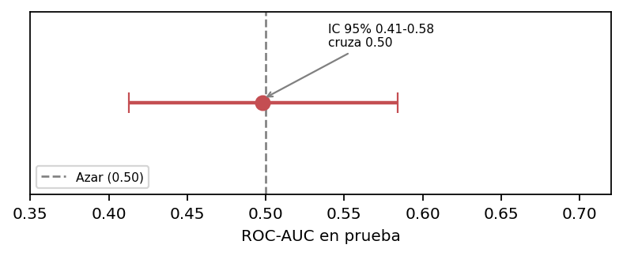
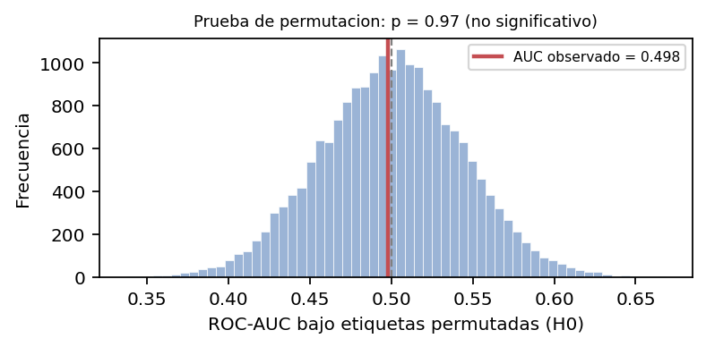
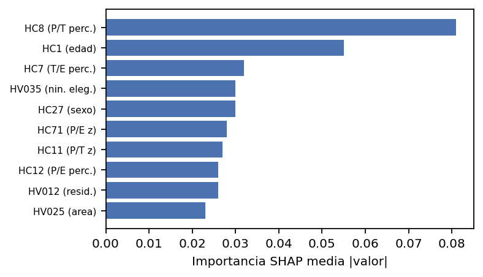

Evaluación reproducible de modelos de aprendizaje automático con interpretabilidad SHAP para predecir la anemia en niños de 6 a 35 meses de la región Puno, a partir de los microdatos públicos de la ENDES (INEI) 2021–2025.
Hallazgo principal: con los módulos de hogar (RECH0) y antropometría (RECH6), ningún modelo superó al azar ni a un clasificador trivial (ROC-AUC = 0,498; IC 95 % 0,41–0,58). El aporte no es un clasificador, sino una delimitación empírica: estos datos rutinarios no bastan para predecir la anemia a nivel individual en esta población.



Base integrada 2021–2025, anonimizada (año + 33 predictores + target; sin identificadores, coordenadas ni hemoglobina) y su diccionario.
Integración por año (01–05) y preprocesamiento + modelos + SHAP (06). Reproducen todo el flujo desde los microdatos del INEI.
Short paper en formato IEEE con la evaluación completa, intervalos de confianza, pruebas de significancia y discusión del resultado negativo.
Entorno con requirements.txt, guías de reporte TRIPOD+AI y REFORMS, y CITATION.cff para citar el trabajo.
Se excluyen hemoglobina (HC53, HC56, HC57) y altitud del conglomerado (HV040); imputación ajustada solo con entrenamiento.
Clasificador de clase mayoritaria y predicción aleatoria, imprescindibles con prevalencia > 70 %.
Intervalos de confianza (Wilson, Hanley–McNeil), prueba binomial y prueba de permutación (10 000 repeticiones).
Las atribuciones solo se interpretan si el modelo supera al azar; aquí describen ruido, no determinantes.
Se usan microdatos secundarios, públicos y anonimizados del INEI; no se realiza reidentificación. Por tratarse de datos de salud de menores, el repositorio no redistribuye los microdatos crudos ni variables de geolocalización: se publica solo el código, el diccionario y la base anonimizada.
Los microdatos originales se descargan del portal oficial del INEI: proyectos.inei.gob.pe/microdatos